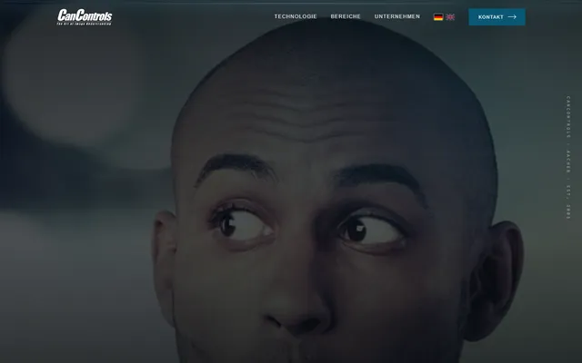
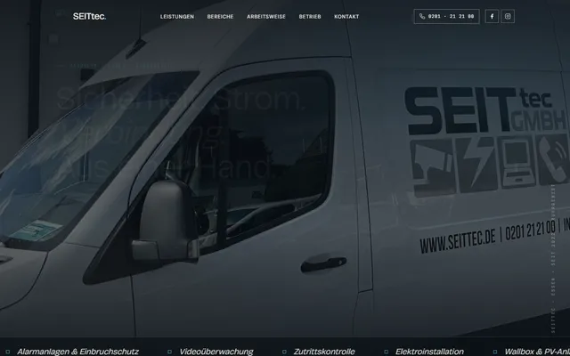
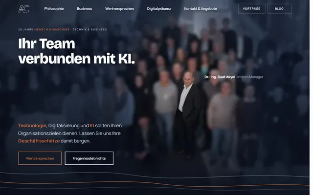
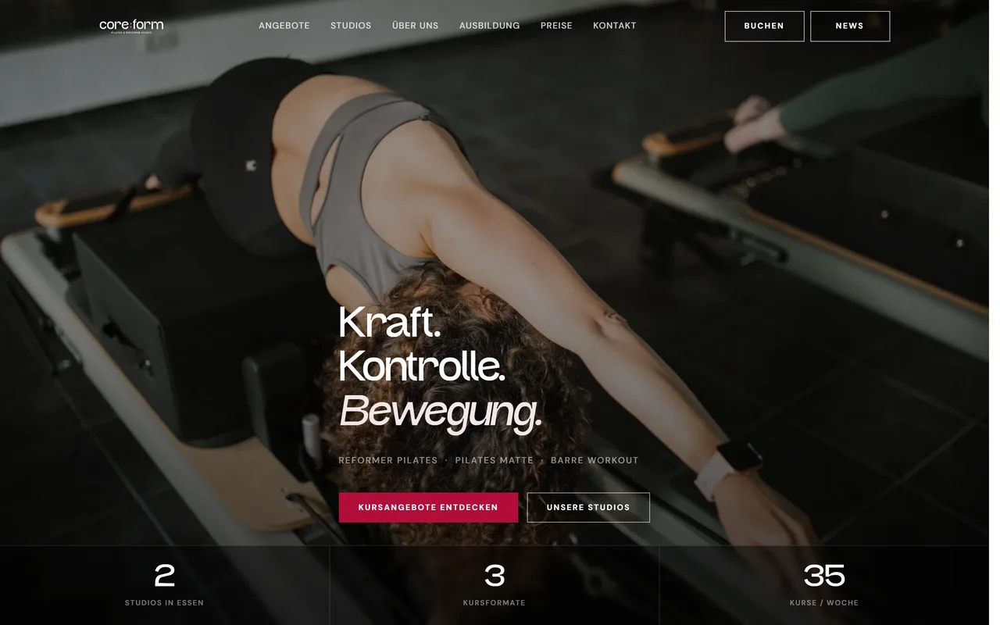
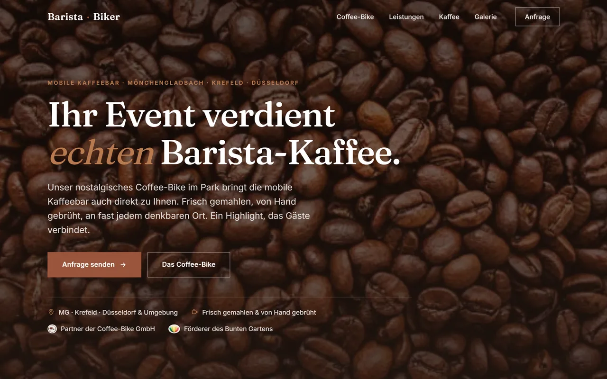
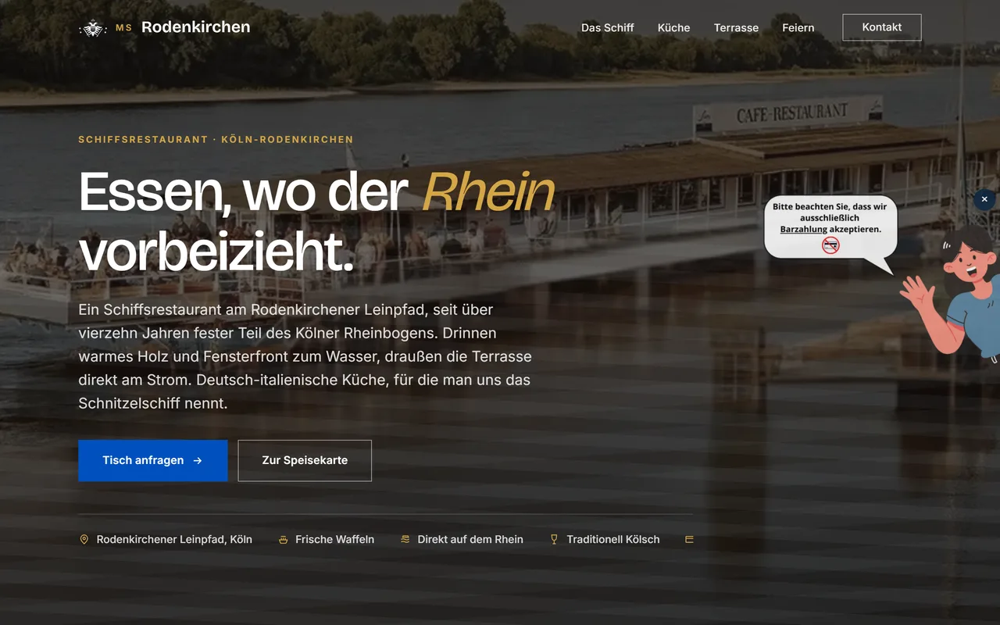

Redesign preview
About this preview.
What this is, what was built, how far it goes and what it would take to put it live. Written for the people who have to decide, not for developers.
Please note
- This is a non-binding design concept, produced independently by Dr.-Ing. Suat Akyol. It is not commissioned work and not an offer.
- It is blocked for search engines and does not compete with the existing site.
- All texts and photographs come exclusively from the publicly available existing website of KaTech Ingredient Solutions and remain the property of their owners.
- There is no connection to the official KaTech or Ingredion web presence. It can be taken offline at any time on request.
What was built
The same site, rebuilt.
Nothing was left out. Every area of the existing site exists here, and every page kept its original address.
What you can click today
- Start page, all eleven product areas and every product type below them
- Company, expertise, facilities, certifications and locations
- Complete news archive with detail pages
- Enquiry form, mobile navigation, image gallery, consent-gated maps
- Schema markup, social preview images, sitemap and error page
What would still be done
- Connect the enquiry form to your mailbox
- German and Polish versions from your existing translations
- Final Ingredion corporate design values once the group specification lands
- Move to your domain and release it for search engines
- Content editing by your team, by prompt or through a small editor
Design system
Your colours. Already the group's colours.
The KaTech logo already uses the exact Ingredion values: the green, the yellow and the dark grey are identical. The website simply never followed. This preview closes that gap.
Two typefaces are used. Headlines are set in Barlow, a compact, straightforward typeface without the small serifs, close in character to the one the group uses. Body text is set in Open Sans, which is literally the same family Ingredion uses on its own site.
Both are free to license and are delivered from the site itself, so no data goes to a font service and nothing depends on an external provider. When the group licence for the corporate typeface arrives, swapping it is a one-line change.
The full picture
What is actually in there.
A website of this kind is not one page, it is an archive. These are the measured numbers of the existing site, and they are the reason this preview rebuilt the structure rather than a few sample screens.
Already done
What this preview already delivers.
- Complete design system in the Ingredion colour and layout world, with the KaTech logo and its yellow kept as the mark of identity
- All 13 product areas and every product type below them, navigable and with their own text and image from the existing site
- 173 of the 200 pages carry real content; the remaining 27 are marked as not built out rather than quietly left blank, so the boundary of this preview is visible
- Every existing page kept at its original address, so bookmarks and external links continue to work
- Company, expertise, facilities, certifications and locations, restructured into four clear routes instead of a menu with over one hundred entries
- News archive and all team profiles as individual pages
- Enquiry form, mobile navigation, image gallery and consent-gated maps, tested by machine on desktop and on a phone
- Machine-readable structure for search engines and AI assistants: organisation, product lists, articles and breadcrumbs
- Social preview images, sitemap, error page and a text file that tells AI assistants what this company does
- Built for phones first and verified down to 320 pixels without a single horizontal overflow
- Static delivery without WordPress, plugins or a database
Still open
What the real project would still involve.
- Filling the 27 pages that are marked as not built out, plus the detail content and the full news archive beyond the English part shown here
- The German and Polish versions, and the habit of making every future change three times
- Connecting the enquiry route to your mailboxes, including who receives which product area
- A publishing workflow and the training that goes with it, so your team changes content without calling an agency
- Redirects and search engine migration from the existing domain, so nothing that ranks today is lost
- Hosting, operation, backups and the question of who is responsible for what
- Legal texts reviewed against the current company structure rather than carried over
- The approval loop with Ingredion for the final corporate design and the corporate typeface licence
- Photography: the current images are from 2012 and 2013, and the plant-based centre of excellence does not appear in a single one of them
The two lists are deliberately shown side by side. The left one is design and structure, and that work is largely behind us. The right one is content, languages and operations, and that is where a project of this kind actually lives.
It is worth saying plainly: the site is trilingual, which means every text decision is made once and carried three times. That single fact shapes the size of the undertaking more than any design question.
Scope
How far this goes.
A website can be a single page or a platform. Saying out loud where a project sits keeps everyone talking about the same thing.
- Your current site rebuilt sits around 5.5. Many pages, a form, news, three languages, no login and no shop.
- This preview sits slightly above it, because findability, speed and the schema work are already included.
- My recommendation sits a little higher again: add the customer area with real content and let your own team edit pages. Both are steps, not a rebuild.
- Eight to ten is a different horizon, not a gap you are behind on: customer login with documents, and an assistant that answers formulation questions from your own product data.
Comparison
What is different.
Measured, not asserted. The existing site does several things right, including a clean sitemap structure and consistent page titles.
| Aspect | Current site | This preview |
|---|---|---|
| Design | Template from 2013, unchanged since launch | Built on the Ingredion colour and layout system, with the KaTech logo unchanged |
| Structure | Mega menu with over 100 entries at once | Four clear routes, every page still reachable and kept at its original address |
| Images | Small images at 432 by 288 pixels, some loaded from a third-party domain | The same photographs, sharpened and delivered as WebP from one domain |
| Speed | WordPress with several stylesheets, jQuery and an old slider | Static HTML, no framework, no database, no plugin updates |
| Findability for AI | One generic schema block, no machine-readable structure | Organization, ItemList, Article and Breadcrumb schema on every page type |
| Mobile | Layout from before responsive design was standard | Built mobile first, tested down to 320 pixels |
| Maintenance | Every change goes through an agency | Content changes by prompt, live in minutes, demonstrated in this meeting |
Technology and peace of mind
Nothing is lost, nothing is risked.
The existing site runs on WordPress with a custom theme built in 2013, hosted on a virtual server in London.
Your current site stays untouched
The new site runs in parallel on a separate address until you decide to switch. The switch itself is one setting, and it is reversible.
A full backup before anything happens
The existing site is backed up completely and stays restorable after the switch. There is no point at which the old site is gone.
No plugin treadmill
Static HTML has no database and no plugins, so there is nothing to patch on a Friday evening and nothing that breaks when a plugin updates itself.
Your addresses stay valid
Every page here sits at the address it has today. Bookmarks, links in supplier documents and search results keep working.
The site belongs to you
Full rights to everything that is built, no lock-in, no dependency you cannot leave. If you want to move it elsewhere or hand it to your own IT, you do exactly that.
References
Other sites I have built.
B2B and industry first, then the range. Some are in operation on their own domain, others are concepts like this one.

CanControls
Measurement technology for engine development. B2B, technical audience, explanation-heavy subject matter.
View live
SEITec
Safety and electrical engineering for industrial clients. Certifications, services, plant environment.
View live
akyol.de
My own site: interim management, writing and talks. The reference implementation for everything shown here.
View live


MS Rodenkirchen
Restaurant ship in Cologne. The most recent concept, built one week before this one.
View liveWho I am
Twenty-five years of people and machines.
Dr.-Ing. Suat Akyol, interim manager for technical mid-sized companies and for group subsidiaries that are still run in a mid-sized way. Research, line management, and artificial intelligence in day-to-day operations.
Eighteen years in industry, at the seam between engineering and market
Business responsibility in operating roles, not in advisory ones. As Business Manager in healthcare IT I ran a unit of 80 people, from sales through to development, with hospital groups among the customers. In renewable energy it was wind power with international partners and solar thermal across EMEA, including work with Siemens and the German Aerospace Center.
Transformation as line work
Lean Six Sigma, an ERP rollout, post-merger integration of people and systems with buy-in rather than turnover, commercial analytics for a sales force of a thousand across EMEA. The kind of work where the organisational chart is the easy part.
Research first: RWTH Aachen
A doctorate in artificial intelligence and image processing, awarded with distinction, at a time when AI was a niche subject. Gesture recognition for automotive on-board systems, a sign language exhibit at the Heinz Nixdorf MuseumsForum, publications and teaching. The question was the same then as now: what can the machine actually do, and how does it land with the person using it.
Why this preview exists at all
I work as an interim manager for technical mid-sized companies and for group subsidiaries that are still run in a mid-sized way. A website built like this is not my trade, it is the shortest way to show what an organisation can do for itself once the work is set up properly. One contact who has run technical organisations himself, rather than a chain of internal handovers.
Few people connect strategic and tactical thinking as effectively as he does.
Questions about this concept?
Comments, corrections and objections are welcome. Write to contact@akyol.de.